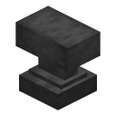

Requirements#

Minecraft Forge- Version
- 1.20.1, Forge 47 or newer
- Mod ID
forge
 Alien Evolution
Alien Evolution
- Version
- 2.0.0 or newer (the Java edition)
- Mod ID
alienevo
 Palladium
Palladium
- Version
- 4.5.0 or newer
- Mod ID
palladium
 Chrono API
Chrono API
- Version
- 1.0.3 up to 2.0
- Mod ID
chrono_api
Alien Evolution brings its own requirements (Palladium and TerraBlender among them). All of them have to be on both the client and the server.
Installing#
- Install Forge for 1.20.1 and start the game once.
- Put Deus Chrono-Machina, Alien Evolution, Palladium and Chrono API in your
modsfolder. - Start the game. Deus Chrono-Machina has its own creative tab with every item.